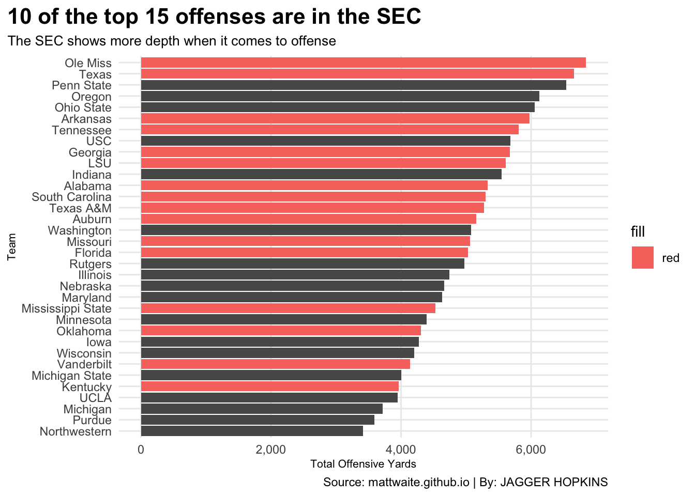

Is the Big10 truly taking over the SEC’s spot as the best conference?
Let’s look at last year’s stats to figure that out. I will be using the 2024 football logs from mattwaite.github.io.
The first stats that I want to take a look at is on the offensive side of the ball. While defense does win championships, you need to score to win. I am going to be looking at each SEC and Big 10’s rushing and passing game from last year.
Code
library(readr)library(tidyverse)library(dplyr)library(ggrepel)football <-read_csv("https://mattwaite.github.io/sportsdatafiles/footballlogs24.csv")BOff <- football |>group_by(Conference, Team) |>summarise(RushingYards =sum(RushingYds),PassingYards =sum(PassingYds))|>mutate(Yards=RushingYards + PassingYards ) |>filter(Conference %in%c("Big Ten Conference", "Southeastern Conference"))SOff <- BOff |>filter(Conference %in%c("Southeastern Conference"))ggplot() +geom_bar(data=BOff, aes(x=reorder(Team, Yards), weight=Yards)) +geom_bar(data=SOff, aes(x=reorder(Team, Yards), weight=Yards, fill ="red")) +coord_flip() +labs(y ="Total Offensive Yards",x ="Team",title ="10 of the top 15 offenses are in the SEC",subtitle ="The SEC shows more depth when it comes to offense",caption="Source: mattwaite.github.io | By: JAGGER HOPKINS" ) +scale_y_continuous(labels = scales::comma) +theme_minimal() +theme(plot.title =element_text(size =16, face ="bold"),plot.title.position ="plot",plot.subtitle =element_text(size =10),axis.title =element_text(size =8),panel.grid.minor =element_blank() )

Code
#| include: falseggsave("image.png")
Seeing that the SEC shows more depth when it comes to offense. Let’s take a look at their respective defenses. Like stated before defense wins championships, and the SEC has been known for having outstanding defense year in and year out. In this graph I will be showing you the defensive stats that are the most important to me. Limiting first downs is the foundation to a good defense, if they can’t get a first down, they cant move the ball. The other two stats are a little bit more obvious, who gets more takeaways and who limits touchdowns. Obviously you need to limit touchdowns, that is the entire point of the defense going on the field.If the defense can get takeaways and create opportunities for the offense, that’s when a defense beccomes lethal.
# A tibble: 6 × 4
Team TotalTOs TotalFirstDowns TotalTD
<chr> <dbl> <dbl> <dbl>
1 Ohio State 17 202 18
2 Ole Miss 23 242 20
3 Texas 30 245 21
4 Alabama 28 245 23
5 Indiana 24 192 23
6 Iowa 24 230 24
Code
DTab |>gt() |>cols_label(TotalTOs ="Turnovers",TotalFirstDowns ="First Downs",TotalTD ="Total TD's" )|>tab_header(title ="Does the SEC or BIG10 have more stifiling defense?",subtitle ="Nine SEC schools in the top 15 when looking at forcing turnovers and limiting first downs and TD's" ) |>tab_style(style =cell_text(color ="black", weight ="bold", align ="left"),locations =cells_title("title") ) |>tab_style(style =cell_text(color ="black", align ="left"),locations =cells_title("subtitle") ) |>tab_source_note(source_note =md("**By:** JAGGER HOPKINS | **Source:** mattwaite.github.io ") ) |>tab_style(locations =cells_column_labels(columns =everything()),style =list(cell_borders(sides ="bottom", weight =px(3)),cell_text(weight ="bold", size=12) ) ) |>opt_row_striping() |>opt_table_lines("none") |>tab_style(style =list(cell_fill(color ="#14213D"),cell_text(color ="white") ),locations =cells_body(rows = Team =="Ole Miss" )) |>tab_style(style =list(cell_fill(color ="#bf5700"),cell_text(color ="black") ),locations =cells_body(rows = Team =="Texas" )) |>tab_style(style =list(cell_fill(color ="#9E1B32"),cell_text(color ="white") ),locations =cells_body(rows = Team =="Alabama" )) |>tab_style(style =list(cell_fill(color ="#FF8200"),cell_text(color ="black") ),locations =cells_body(rows = Team =="Tennessee" )) |>tab_style(style =list(cell_fill(color ="#BA0C2F"),cell_text(color ="white") ),locations =cells_body(rows = Team =="Georgia"))|>tab_style(style =list(cell_fill(color ="#841617"),cell_text(color ="white") ),locations =cells_body(rows = Team =="Oklahoma"))|>tab_style(style =list(cell_fill(color ="#73000a"),cell_text(color ="white") ),locations =cells_body(rows = Team =="South Carolina"))|>tab_style(style =list(cell_fill(color ="#0033A0"),cell_text(color ="white") ),locations =cells_body(rows = Team =="Kentucky"))|>tab_style(style =list(cell_fill(color ="#FDB719"),cell_text(color ="black") ),locations =cells_body(rows = Team =="Missouri"))
Does the SEC or BIG10 have more stifiling defense?
Nine SEC schools in the top 15 when looking at forcing turnovers and limiting first downs and TD's
Team
Turnovers
First Downs
Total TD's
Ohio State
17
202
18
Ole Miss
23
242
20
Texas
30
245
21
Alabama
28
245
23
Indiana
24
192
23
Iowa
24
230
24
Tennessee
21
225
24
Minnesota
21
208
25
Penn State
24
259
25
Georgia
19
249
28
Oklahoma
21
212
28
South Carolina
24
235
28
Kentucky
16
215
29
Michigan
18
226
29
Missouri
17
211
29
Auburn
13
213
30
Illinois
20
275
31
Nebraska
17
214
31
Wisconsin
12
219
32
Texas A&M
20
255
34
Florida
25
282
35
Arkansas
15
259
37
LSU
14
242
37
Northwestern
16
229
37
Vanderbilt
16
268
37
Maryland
17
252
41
Rutgers
13
256
44
Mississippi State
12
286
47
Purdue
5
288
60
By: JAGGER HOPKINS | Source: mattwaite.github.io
In this last graph I will be combined offense and defense. See how these two sides of the field come together and show us what’s what. I will be looking at the team total wins, and their defensive and offensive yards per play. See which teams are being productive both offensively and defensively, who’s limiting offense and who’s torching the defense.